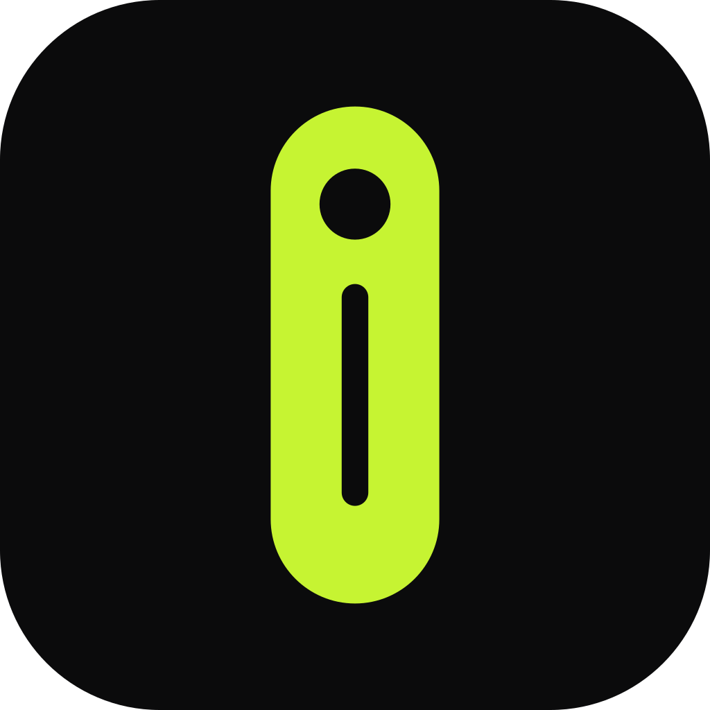

Política de privacidad de isbar
Última actualización: 27 de octubre de 2026
isbar es una barra flotante para Windows que muestra música, notificaciones, temporizadores y recordatorios en la parte superior de la pantalla. Esta política explica qué información usa la aplicación y qué hace con ella.
Resumen
isbar no recopila, no envía ni comparte ningún dato personal. Todo funciona dentro de tu equipo: la aplicación no se conecta a ningún servidor, no tiene cuentas de usuario, ni publicidad, ni analíticas.
Información que la aplicación lee en tu equipo
- Notificaciones de Windows: con tu permiso, isbar lee las notificaciones que recibes (aplicación, título y texto) solo para mostrarlas en la barra. No las guarda ni las envía a ningún sitio. Puedes retirar el permiso cuando quieras en Configuración de Windows → Privacidad y seguridad → Notificaciones.
- Música en reproducción: título, artista, carátula y estado de la canción que suena en el sistema, para mostrarlos y controlarlos desde la barra.
- Uso de Claude Code (opcional): si instalas tú mismo la integración con Claude Code, isbar lee un archivo local con el porcentaje de uso para mostrarlo. No accede a tu cuenta ni a tus credenciales.
Información que se guarda
Tus ajustes, tareas, registro de agua, estado del Pomodoro y de las pausas activas se guardan únicamente en un archivo dentro de la carpeta de datos de la aplicación en tu equipo. Si desinstalas isbar, Windows elimina esos datos.
Compartir con terceros
isbar no comparte información con nadie. No usa servicios de terceros de seguimiento, publicidad ni estadísticas.
Menores
isbar no recopila datos de ninguna persona, incluidos menores de edad.
Cambios en esta política
Si la aplicación cambia la forma en que trata la información, esta página se actualizará y se indicará la nueva fecha arriba.
Contacto
Si tienes dudas sobre esta política, escribe a gpinto.personal@gmail.com o abre una consulta en github.com/gabrieltosh/isbar.